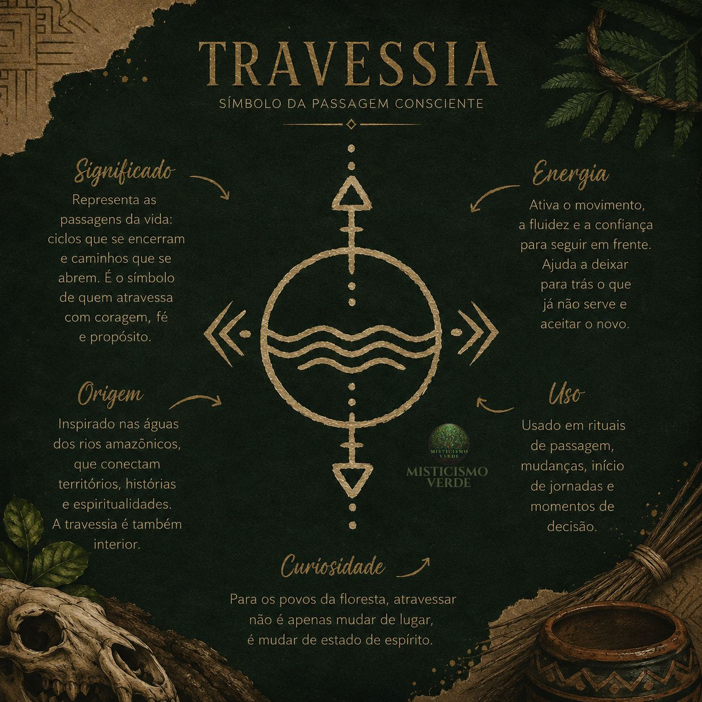
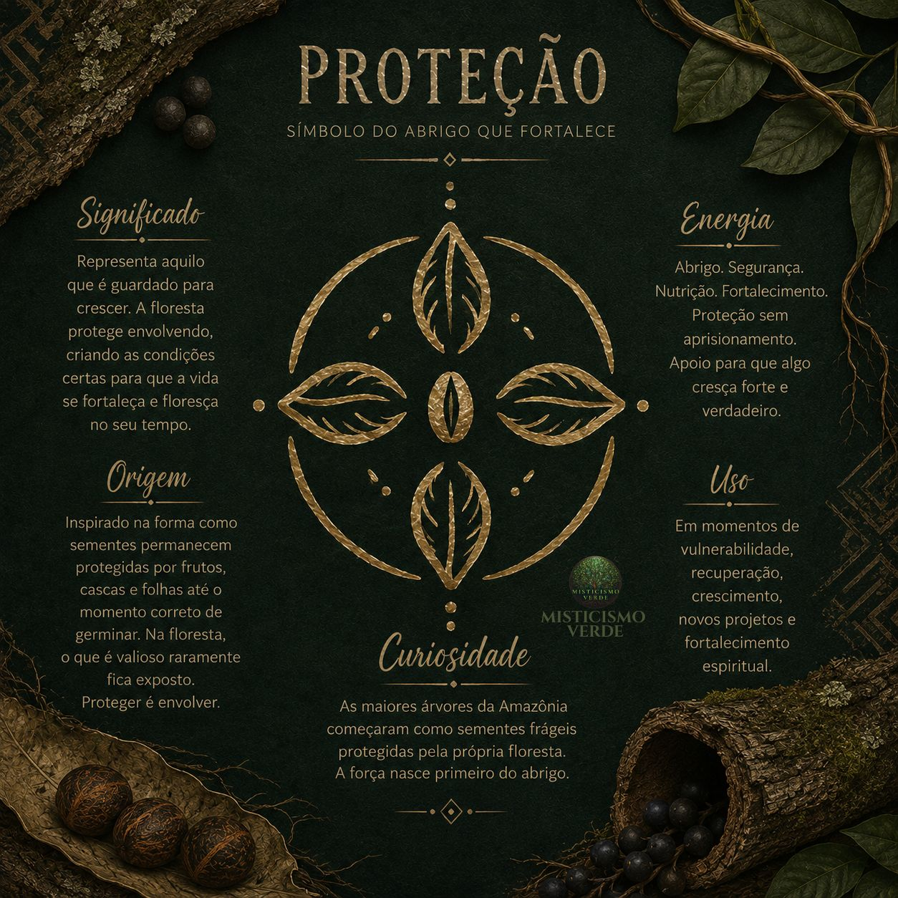
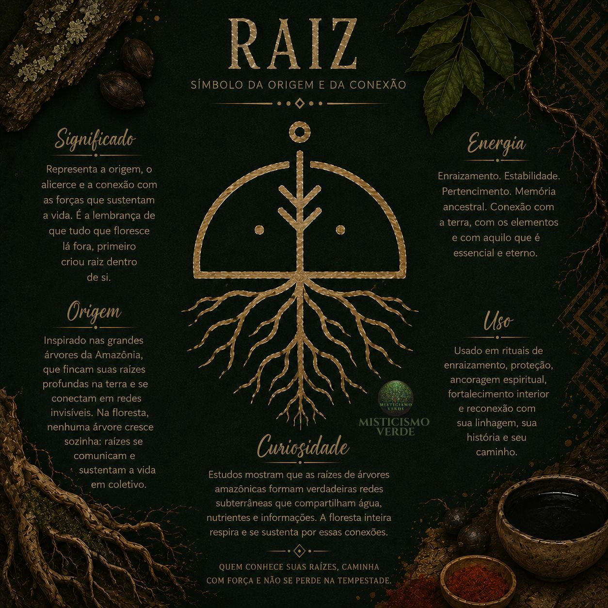
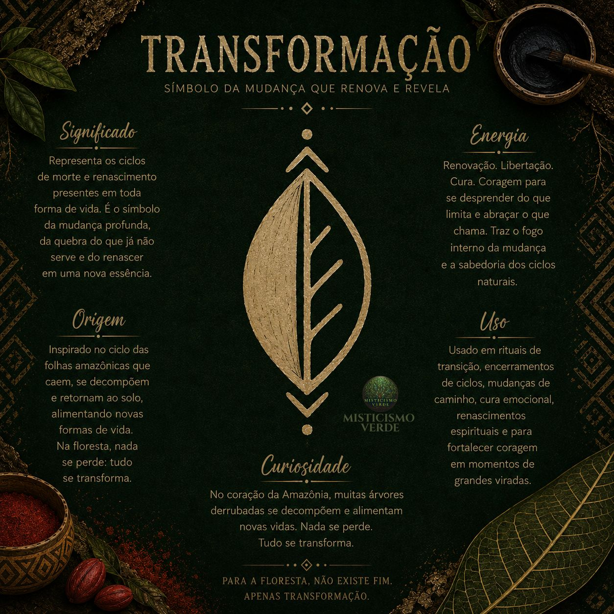
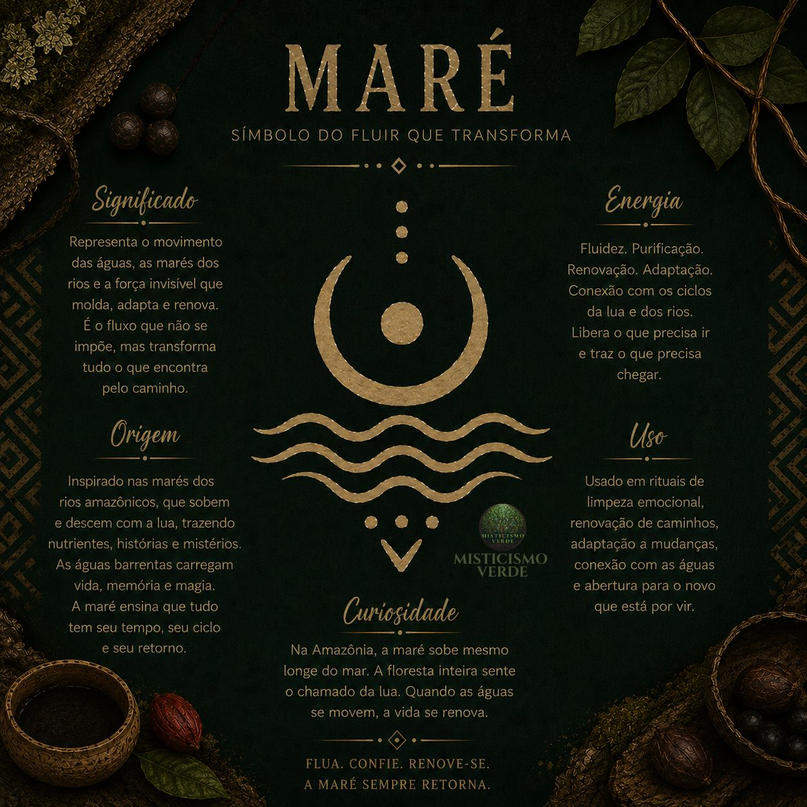
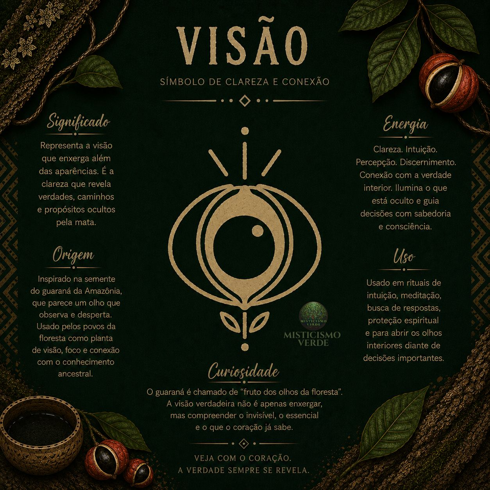
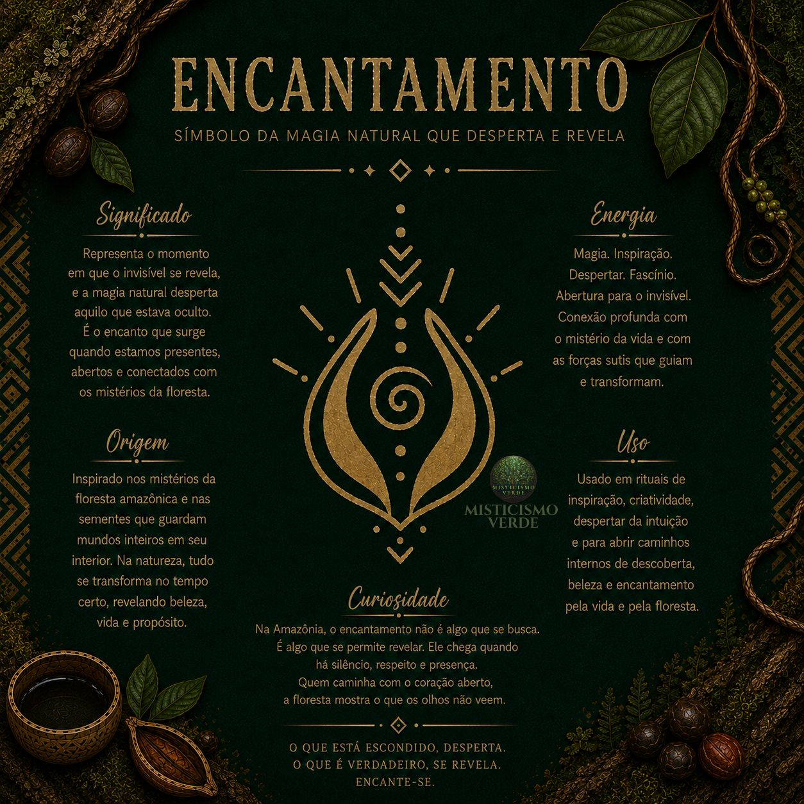

Travessia
O símbolo da passagem conscienteToda floresta possui caminhos. Alguns são claros, outros desaparecem entre folhas, raízes e sombras. Caminhar é também aceitar que nem sempre sabemos exatamente o que encontraremos adiante.
A Travessia representa movimento, passagem e continuidade. É o símbolo dos momentos em que deixamos um lugar conhecido para alcançar algo novo.
Como utilizar: Desenhe em um diário antes de uma mudança significativa. Pergunte-se: “O que estou deixando? Para onde quero caminhar?”

01Proteção
O símbolo do abrigo que fortaleceNa natureza, proteção não significa permanecer imóvel. Uma semente é protegida pela casca. Um broto cresce protegido pelas estruturas que o cercam. Árvores criam ambientes capazes de sustentar outras formas de vida.
O Traço da Proteção nasceu dessa ideia: proteger é criar condições para que algo possa crescer forte. Seu grafismo envolve um núcleo central cercado por formas orgânicas, evocando abrigo, contenção e fortalecimento.
Como utilizar: Posicione próximo à entrada de casa, em objetos pessoais ou em momentos de vulnerabilidade. Contemple o símbolo enquanto estabelece mentalmente quais cuidados precisa fortalecer.

02Raiz
O símbolo da origem e da conexãoAntes de aparecer na superfície, a árvore começa embaixo da terra. As raízes sustentam, alimentam e conectam. Elas representam aquilo que nem sempre podemos ver, mas que mantém a vida de pé.
O Traço da Raiz representa a relação entre origem e crescimento. É um símbolo para lembrar que avançar não significa abandonar aquilo que nos sustenta.
Como utilizar: Use em momentos de reconstrução, em espaços de estudo ou trabalho, ou em projetos que deseja construir com bases sólidas. Pergunte-se: “Quais são as raízes que sustentam o que estou construindo?”

03Transformação
O símbolo da mudança que revela o novoNa floresta, nada permanece exatamente igual. Folhas caem. Matéria se transforma. Sementes germinam. Árvores crescem. Organismos desaparecem e dão lugar a outros ciclos.
A Transformação representa justamente esse movimento — não simplesmente destruir o que existe, mas reconhecer que algumas formas precisam mudar para que outras possam surgir.
Como utilizar: Desenhe em uma folha e escreva ao redor: “O que precisa terminar? O que precisa mudar? O que quero permitir que nasça?”

04Maré
O símbolo do fluxo que transformaA natureza não é estática. Existe movimento constante: ciclos, oscilações, expansão e recolhimento. A Maré nasceu da observação desse princípio de fluxo.
Seu grafismo trabalha visualmente com o movimento das águas e com a ideia de que existem momentos de avanço e momentos de retorno. Nem todo movimento precisa ser linear.
Como utilizar: Use em espaços de descanso, diários ou momentos de planejamento. Reflita: “Estou tentando forçar um movimento ou estou percebendo o ritmo do momento?”

05Visão
O símbolo da clareza e da percepçãoEntre os elementos que inspiraram os Traços do Invisível, o guaraná amazônico ocupa um lugar especial. A aparência de suas sementes maduras, com o contraste entre a semente e sua abertura, pode lembrar visualmente um olho.
A Visão representa não apenas enxergar com os olhos, mas perceber, observar e procurar compreender aquilo que está diante de nós.
Como utilizar: Antes de momentos que exigem atenção, contemple o símbolo e faça uma pausa para observar sem buscar respostas imediatas. Pergunte-se: “O que estou vendo — e o que talvez ainda não esteja percebendo?”

06Encantamento
O símbolo da magia natural que desperta e revelaO encantamento é talvez o mais difícil de explicar porque não depende apenas de uma forma específica da natureza. Ele está naquele momento em que algo comum deixa de parecer comum.
Uma semente contém uma árvore que ainda não podemos ver. Uma floresta guarda sons, formas e relações que passam despercebidos quando não prestamos atenção. O Encantamento representa esse despertar da percepção — o momento em que algo oculto começa a se revelar.
Como utilizar: Desenhe antes de começar um projeto artístico, coloque próximo ao seu espaço criativo ou observe quando quiser mudar a maneira como está percebendo determinado momento.

07Os sete juntos: uma narrativa
Separados, cada Traço possui seu próprio significado. Juntos, eles formam uma narrativa:
TRAVESSIA → caminhar
PROTEÇÃO → preservar
RAIZ → sustentar
TRANSFORMAÇÃO → mudar
MARÉ → fluir
VISÃO → perceber
ENCANTAMENTO → despertar
Essa sequência não precisa ser entendida como uma ordem obrigatória. Ela é uma maneira de observar os sete conceitos como diferentes movimentos da experiência humana e da própria natureza.
“A floresta atravessa ciclos. Nós também.”
Como utilizar os Traços do Invisível
Os grafismos podem estar presentes de diversas formas, dependendo da relação que cada pessoa estabelece com eles.
No espaço: Em quadros, prints, adesivos, vasos, jardins ou objetos decorativos.
No cotidiano: Em cadernos, agendas, marcadores, cartões e objetos pessoais.
Em momentos simbólicos: Associados a velas e práticas de contemplação ou definição de intenções.
Como objeto pessoal: Em pingentes, amuletos e peças de cerâmica.
Na criação: Como elementos de desenho, pintura, gravura, estampas.
Com plantas: Relacionando cada símbolo a uma planta ou elemento natural que dialogue com seu significado.
Intenção, símbolo e natureza
Os Traços do Invisível não foram criados para dizer que uma determinada forma possui, por si só, um poder sobrenatural. Eles funcionam como símbolos de intenção.
Um desenho pode nos lembrar de algo que queremos cultivar: proteção, estabilidade, mudança, percepção, movimento, coragem ou encantamento. É essa relação entre natureza, símbolo e intenção que dá sentido à coleção.
“A floresta não precisa falar para nos ensinar. Às vezes, basta observar.”